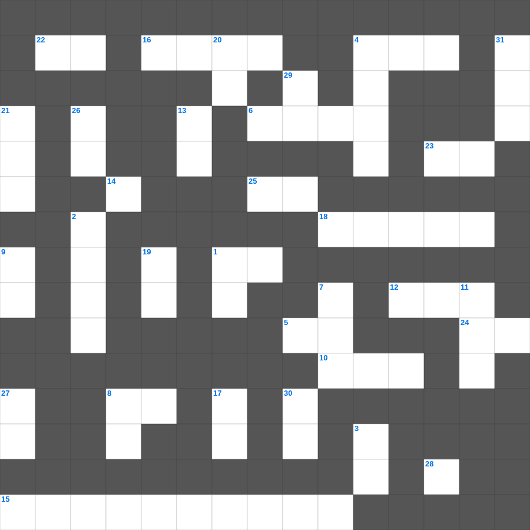

미가 & 나훔 마스터 50
📌 서비스 정의
십자가로세로는 교회 주보와 주일학교에서 사용할 수 있는 성경 기반 가로세로 퍼즐 서비스입니다. 성경 인물, 사건, 핵심 구절을 바탕으로 제작되었습니다. 온라인 풀이 및 인쇄 기능을 제공합니다.
📖 미가란?
미가는 사회적 불의를 질타하면서도 메시아의 탄생지(베들레헴)를 예언하고, 정의와 인자와 겸손을 강조한 예언서입니다.
📚 미가의 주요 사건·주제
사마리아와 예루살렘에 대한 심판 · 메시아의 베들레헴 탄생 예언 · 공의와 인자와 겸손의 요구(미가 6장) · 거짓 지도자들에 대한 경고 · 이스라엘 회복 약속
오늘은 미가의 주요 내용을 담은 미가 무료 성경퀴즈를 준비했습니다. 총 35개의 힌트가 있으며, 주일학교 교재나 성경공부 자료로 활용하기 좋습니다. 무료로 즐기는 미가 가로세로 퍼즐을 지금 바로 풀어보세요!

📝 가로 힌트
1. 사랑하는 자여 네 이것이 잘됨 같이 네가 범사에 잘되고 강건하기를 내가 간구하노라
4. 성전 건축을 위해 백향목을 가져온 곳
5. 요한이서 1장 12절: 무엇으로 쓰기를 원하지 않았나 (2가지 중 하나)
6. 이스라엘이 요단 강을 건너기 전 머문 평지
8. 느헤미야가 이방 여인과 결혼한 자들에게 내린 벌 중 하나
10. 초실절 후 50일째 되는 날의 절기
12. 사랑하는 자들아 우리가 지금은 하나님의 자녀라 장래에 어떻게 될지는 아직 나타나지 아니하였으나 그가 이것하시면 우리가 그와 같을 줄을 아는 것은
14. 곧 곤고한 날이 이르기 전, 나는 아무 이것이 없다고 할 해들이 가깝기 전에
15. 에스겔의 이름 뜻
16. 욕심을 낸 백성들이 장사된 곳 '기브롯 이것'
18. 느헤미야 13장의 핵심 주제
22. 베드로후서 2장 14절: 음심이 가득한 눈을 가지고 죄 짓기를 이것하지 아니하고
23. 이 예언의 말씀에 무엇인가를 더하면 하나님이 이 책에 기록된 이것들을 그에게 더하실 것이요
24. 너희의 믿음이 더욱 자라고 너희가 다 각기 서로 이것함이 풍성함이니
24. 요한의 아들 시몬아 네가 이 사람들보다 나를 더 이것하느냐
25. 하나님이 오늘 너를 자기의 보배로운 이것으로 삼으심
28. 불순종의 결과 '네 하늘은 놋이 되고 네 땅은 이것이 될 것이며'
📝 세로 힌트
1. 믿음의 결국 곧 무엇의 구원을 받음이라
2. 우리가 스스로 우리의 행위들을 조사하고 여호와께로 이것
3. 유다서 1장 14절: 주께서 수만의 거룩한 자와 임하신다고 예언한 인물
4. 성막 기구를 메고 운반하는 책임을 맡은 지파
7. 요한삼서의 수신자: 내가 참으로 사랑하는 이 사람
8. 너는 귀먹은 자를 이것하지 말라
9. 셋째 천사가 전한 복음: 만일 누구든지 짐승과 그의 우상에게 이것하고 이마에나 손에 표를 받으면
11. 죽었다가 예수님이 살리신 베다니 사람
13. 야곱의 아들, 애굽의 총리가 된 꿈의 사람
17. 다윗이 사울의 추격을 피해 숨은 수풀
19. 요한일서 5장 21절: 마지막 권면: 무엇을 멀리하라
20. 엘리사가 수넴 여인의 죽은 이것을 살려줌
21. 베드로의 형제, 예수님의 첫 제자
26. 번제의 제물을 잡는 위치 (번제단 이것)
27. 간음한 여인들아 세상과 벗된 것이 하나님과 이것 됨을 알지 못하느냐
29. 나오미의 가족이 흉년을 피해 이주한 땅
30. 내가 믿나이다 나의 이것 없는 것을 도와 주소서 하더라
31. 요한의 형제, 세베대의 아들, 첫 순교 사도
🧩 이 퍼즐에서 배우는 내용
이 퍼즐은 미가 & 나훔 마스터 50의 핵심 단어와 개념을 자연스럽게 복습할 수 있도록 구성되었습니다. 주일학교 수업이나 개인 성경공부에서 학습 내용을 점검하는 용도로 바로 활용할 수 있습니다.
🧑🏫 교회 교육 자료 활용
이 퍼즐은 주일학교 교재 추천 자료로 활용할 수 있고, 주일학교 주보에 넣기 좋은 분량으로 구성되어 있습니다. 수업용 주일학교 교안에 활동지로 붙이거나, 예배 후 복습용 주일학교 공과교재로 바로 사용할 수 있습니다.
🏷️ 키워드
미가 무료 성경퀴즈, 미가, 십자가로세로, 성경퀴즈, 말씀퀴즈, 가로세로퍼즐, 주일학교 교재 추천, 주일학교 주보, 주일학교 교안, 주일학교 공과교재